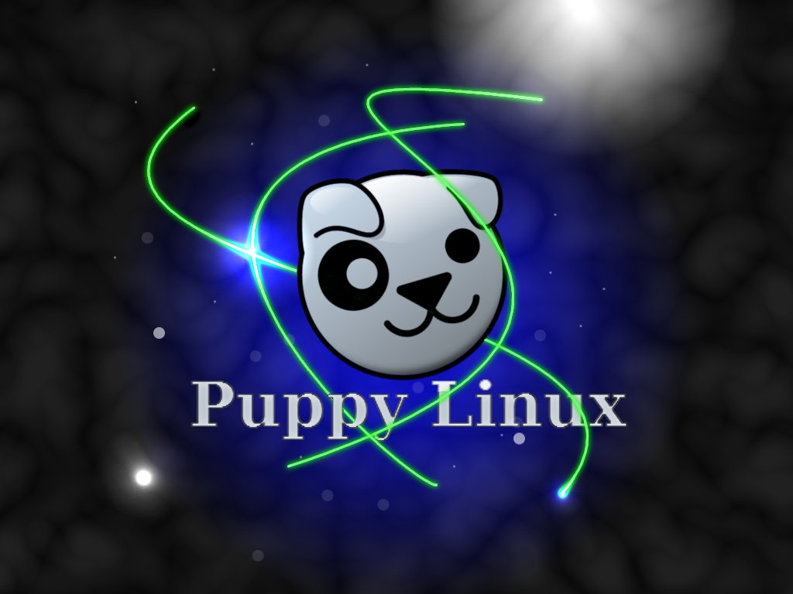
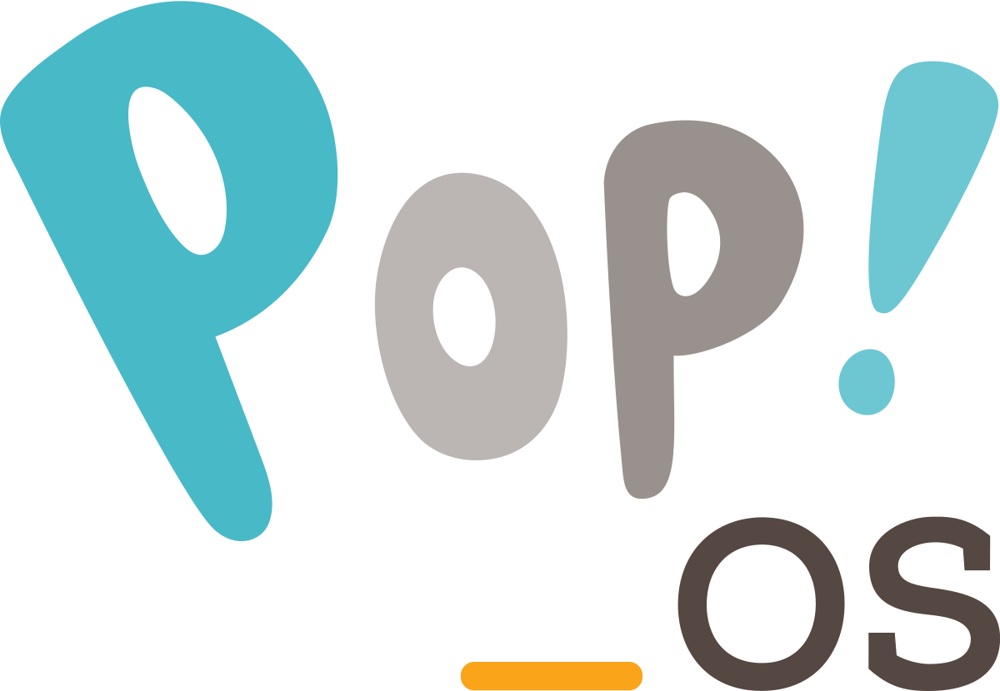

The Many Flavors of Linux
Kali Linux
Puppy Linux

OpenSUSE
Fedora

Ubuntu
Pop!_OS

Open and Free
This page is dedicated to people exploring the use of open-source software. By using and contributing we can keep the open-source dream alive.